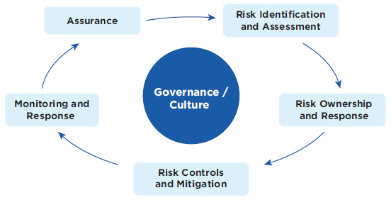
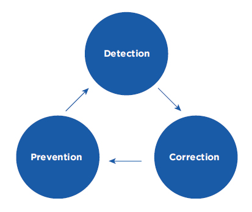

Stewardship and Governance
Audit Committee Report


The principle purpose of the Audit Committee (“AC”) is to assist the Board in discharging its responsibilities mainly in the following three key areas;
- Ensure the integrity of the Group’s financial and statutory reporting
- Oversee the adequacy and effectiveness of the Group’s systems of internal control, compliance processes and risk management
- Evaluate the Group’s revenue assurance capabilities and fraud management
The AC functions as the Group Audit Committee overseeing the Company and its subsidiaries except Mobitel (Pvt) Ltd., which has its own AC.
Role and Responsibilities
- Monitors the integrity of SLT’s financial and statutory reporting on the Group’s and Company’s financial performance before submission to the Board for approval
- Provides recommendations to the Board concerning any proposed new or amended accounting policies
- Meets with the External Auditors on a one-to-one basis on any key issues arising from the audit
- Recommends the reappointment of auditors and their audit fee to the Board
- Review the policy on the provision of non-audit services by the External Auditors
- Considers and recommends to the Board on the appointment of the Group Chief Internal Auditor and adequacy of appropriate resources for the internal audit function
- Reviews the internal audit programme and its effectiveness
- Reviews the systems of internal control, compliance processes, risk management, revenue assurance and fraud management
- Review the internal audit reports and adequacy of management action on audit findings
The Committee has conducted its affairs in compliance with its Terms of Reference.
Membership
The Committee during the financial year comprised three NEDs, of whom two were independent Directors.
- Mr Kanishka Senanayake (Chairman)
- Ms Lai Choon Foong
- Ms Nilanthi Pieris
Ms Lai Choon Foong is a member of international and Malaysian professional accounting bodies. The Committee members have a good mix of skills, expertise and experience in commercial, telecommunications, financial and audit matters in their current or previous senior positions in other organisations.
Mr Ananda Seneviratne was nominated as a member and Chairman of the Committee with effect from 7 February 2020 in place of Mr Kanishka Senanayake who ceased to become a Committee member upon his resignation from the Board.
Mr Mohan Weerakoon, PC was also nominated to the Committee as a member effective from 7 February 2020.
The following officers attend, by invitation, all meetings of the Committee:
- Chief Executive Officer
- Group Chief Financial Officer
- Group Chief Internal Auditor
- External Auditors
Other members of Senior Management are also invited to attend as appropriate, to present reports and provide response to audit issues presented to the Committee.
The Company Secretary functions as the Secretary of the Committee.
Meeting of Committee
The Committee met five times during the year 2019. The attendance of the Directors at the Committee meetings is given on page 91 of the Annual Report.
Activities during 2019
| Month of Meeting | Key Activities | |
| 27 March 2019 | Reviewed internal audit findings, recommendations and management action with Group Chief Internal Auditor and management | |
| Reviewed revenue assurance and fraud management findings | ||
| Reviewed key enterprise risks and mitigating action | ||
| Reviewed delegation of financial authority policy | ||
| Discussed key audit concerns with External Auditors | ||
| 14 May 2019 | Reviewed and recommended financial results for 1st quarter 2019 to the Board for approval | |
| Reviewed internal audit findings and recommendations as well as management action | ||
| Reviewed revenue assurance and fraud management findings | ||
| Reviewed changes and updates in key enterprise risks | ||
| 17 July 2019 | Reviewed update on revenue assurance and enterprise risk management | |
| Reviewed Management responses and corrective action taken on external and internal audit findings and recommendations | ||
| Reviewed and recommended the external audit fees for the Group and subsidiaries to the Board for approval | ||
| Reviewed and recommended various accounting policies to the Board for approval | ||
| 7 August 2019 | Reviewed and recommended the financial results for 2nd quarter 2019 to the Board for approval | |
| Reviewed revenue assurance findings and updated on enterprise risk management | ||
| 23 September 2019 | Reviewed revenue assurance findings and updates to enterprise risk management | |
| Reviewed and recommended revised accounting policies and approval or signing authorities to the Board for approval | ||
| Reviewed the progress of internal audits against the internal audit plan |
Group’s Financial Reporting
The purpose of reviewing financial reporting is to ensure the adequacy of the interim and annual Financial Statements and reports as well as compliance to regulatory requirements.
To fulfil these duties, the Committee reviewed:
- monthly, quarterly and annual management and financial performance reports against budgets and forecasts;
- External Auditors’ management letters and AC reports;
- internal audit reports on key audit findings and recommendations followed by corrective action taken by Management;
- revenue assurance and risk management reports;
- fraud and investigation reports;
- cybersecurity and whistle-blowing cases; and
- post implementation reports on key projects and systems.
External Audit
The Committee ensures that the external audit process is effective on a continuing basis and is focused on:
- Ensuring timely, constructive and transparent communications with the external auditors including on the areas of improvement
- Reviewing the adequacy of external audit plan, findings and recommendations as well as value added services to the Group
Auditor’s Independence
The Committee reviews the policies and procedures on the use of the external auditor for non-audit services in accordance with professional and regulatory requirements.
It ensures that fees incurred or to be incurred for non-audit services do not exceed the external audit fees and is in compliance to the relevant ethical guidance for external auditors.
External Auditor’s Fees
The fees paid to the external auditor during the financial year 2019 are disclosed in Note No. 7 to the Financial Statements.
Group’s Systems of Internal Control and Compliance
Group Internal Audit
SLT’s Group Internal Audit function covers the key risks areas in both the business and operations of the Company and its subsidiaries.
Group Internal Audit’s activities are based on the annual internal plan approved by the Committee and are focused on assessing the adequacy and effectiveness of the systems of internal controls in key risk areas of the businesses and operations. It also covers investigation of fraud and misappropriation cases.
To fulfil its duties, the Committee reviewed:
- Internal Audit’s reporting line and access to the Committee and Board;
- Internal Audit’s organisation and resources
- Internal Audit’s plan and achievement of the plan; and
- Internal Audit’s key findings and recommendations, and adequacy of management’s response and corrective action;
Risk Management
The Group’s risk management framework involves the following key processes:

- Strategic
- Operational
- Compliance
- Financial
The Committee reviews the adequacy of management’s identification and assessment of critical enterprise risks, risk ownership and action taken to mitigate these risks.
The risk management approach is embedded in the areas of corporate governance covering the business, financial, legal, security and human resource aspects.
Revenue Assurance and Fraud Management
Revenue Assurance
Revenue Assurance function is focused on minimising revenue, cost and margin leakages, and fraud management.
The Committee addresses Revenue Assurance from three main perspectives:

Detection
The Revenue Assurance function monitors the existing systems to detect various leakage, frauds and abuses, and ensures that prompt corrective actions are taken to minimise losses to the Company.
Correction
Correction is the process of minimising errors identified during the detection process and it could involve modification or enhancements of processes and systems.
Prevention
Prevention is the process of performing an activity in order to prevent anomalies that are detected in the processes.
Fraud Management
Fraud management focuses on the detection of illegal call termination and other abuses which results in the loss of revenue. A revenue assurance & fraud management system is being implemented to enhance the detection of leakages and fraud cases.
On behalf of the Group Audit Committee
Ananda Seneviratne
Chairman of the Audit Committee
3 June 2020